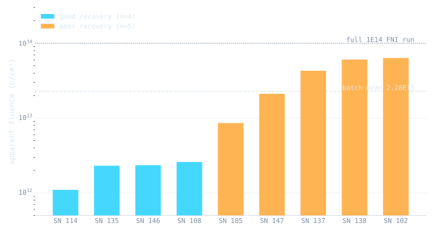

M.S. thesis · in progress
Transistor neutron dosimetry
The measurement
Silicon bipolar transistors make good fast-neutron dosimeters. Displacement damage in the base region degrades the current gain, and the change in reciprocal gain maps to a 1 MeV(Si)-equivalent fluence through the Messenger-Spratt equation. The UMLRR runs this method per ASTM E1855-15 in its Fast Neutron Irradiator: irradiate 2N2222A devices, anneal for 2 hours at 80 °C to strip the unstable defect component, remeasure the gain, and compute fluence.
The program is reproducible to about ±8% between 1×1013 and 3×1014 n/cm². Below 1×1012 n/cm² it falls apart, with individual devices reading anywhere from 50% under to 300% over the expected fluence. Explaining that scatter is what the thesis set out to do.
The system I built
Before the physics questions could be asked cleanly, the measurement chain had to be automated. I wrote Python instrumentation software that drives a Keithley source-measure setup over GPIB with iterative base-current convergence, handles pre-irradiation screening, and takes post-irradiation gain measurements under an identical protocol every time. A standalone fluence calculator implements Messenger-Spratt with full uncertainty propagation. The system has characterized TO-18 metal-can and 2N2222AUB surface-mount packages across 1×1010 to 6×1014 n/cm².
The bimodal result
In-pile irradiations deliver gamma dose alongside the neutrons, so the first control experiment isolated the gamma channel entirely. Nine devices with matched irradiation histories received 12,400 rad of pure Co-60 gamma, the dose that MCNP calibration maps to a 1×1014 n/cm² reactor run, delivered in a geometry uniform to better than 2%. All nine then went through the standard 2-hour 80 °C anneal.
They did not scatter around a mean. They split.

Four devices recovered to a mean residual Δ(1/hFE) of 0.0026 and five stalled at 0.0488, with an empty gap between the populations. Dose non-uniformity cannot produce a 19× split across a few inches of uniform field, and instrumentation drift cannot produce a discrete gap in a single measurement session, so both were ruled out. The leading hypothesis is residual oxide trap inventory from each device's prior irradiation history surviving the 180 °C reset protocol, which the next experiment tests with verified-fresh devices.
Why it matters
Averaged over all nine devices, the gamma residual that survives the standard anneal looks like 23% of a full 1×1014 n/cm² neutron signal, far above the few percent the program historically assumed. At high fluence the offset hides inside the calibration constant. At low fluence a poor-cluster device's gamma residual can rival or exceed the true neutron signal, and a batch drawn from a mixed population produces exactly the half-accurate, half-wildly-high pattern seen in the field data. The fix runs through device screening, anneal kinetics, or both, and that is where the thesis goes next.
The PDF covers the Co-60 baseline arm of the thesis. Full thesis expected 2027.